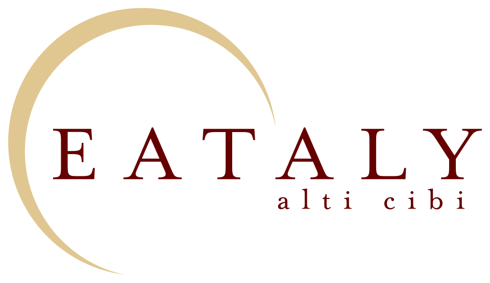

홈 > 브랜드 매거진 > Eataly
Eataly
이탈리(Eataly)는 이탈리아 고품질 식재료의 판매·취식·학습을 한 지붕 아래 결합한 이탈리아식 식료품 마켓이다.
산업 분야 식음료 · 공개 등급 자료 기반 · 브랜드 평가 4.1 ★

한눈에 보는 브랜드
이탈리(Eataly)는 이탈리아 고품질 식료품을 한 지붕 아래 모아 사고, 먹고, 배우게 하는 프리미엄 식문화 복합 리테일이다. 2002년 오스카 파리네티가 구상해 2007년 1월 토리노 링고토의 옛 베르무트 공장을 개조해 1호점을 열었고, 이름은 EAT과 ITALY의 결합이다.
슬로푸드 운동과의 제휴, 뉴욕 진출이 두 전환점이며, 현재 약 12개국 40개 이상 매장으로 확장됐다.
브랜드 관점
이탈리의 핵심 차별점은 마켓·레스토랑·요리교실을 하나의 공간에 묶은 eatertainment 융합 모델이다. 손님은 레스토랑에서 맛본 재료를 바로 옆 매대에서 구매하고, 강좌에서 조리법까지 배운다.
이 구조는 머무는 시간과 객단가를 끌어올리고, 식료품·외식·교육이라는 세 수익원을 교차 판매로 연결한다. 시장 함의는 분명하다.
화이트홀푸드 같은 고급 식료품과 일반 외식 사이에 '체험형 미식 공간'이라는 범주를 새로 만들었고, 산지 직소싱과 이탈리아 생물다양성 서사로 가격 프리미엄을 정당화한다. 한국 독자 맥락에서 보면, 백화점이 식품관을 집객 엔진으로 재편하는 그로서란트 흐름의 원형으로 읽힌다.
미식 콘텐츠가 공간 체류와 매출을 동시에 끌어올리는 방식은 국내 유통이 참고할 만한 설계다.
시작과 성장
2000년대 초 이탈리아 외식·식료품 시장은 대형마트의 표준화와 지역 장인 생산자의 쇠퇴가 맞물린 시기였다. 가전 유통 체인 우니에우로를 매각한 오스카 파리네티는 2002년 11월 좋은 음식을 합리적 가격에 모두에게 제공한다는 구상을 내놓고, 이탈리아 20개 주를 돌며 슬로푸드 기준에 맞는 생산자를 발굴했다.
5년 준비 끝에 2007년 1월 토리노의 폐쇄된 베르무트 공장을 개조해 1호점을 열었다. 첫 전환점은 슬로푸드 운동과의 철학적 제휴로, '좋고 깨끗하고 공정한' 먹거리라는 정체성을 확립했다.
두 번째 전환점은 2010년 뉴욕 진출로, 미국 시장이 이후 전체 매출의 절반 이상을 차지하는 성장 축이 됐다. 이어 밀라노, 두바이, 일본, 한국 등지로 확장하며 직영 플래그십과 프랜차이즈를 병행했다.
브랜드 아이덴티티
이탈리의 핵심 가치는 미식 민주화다. 슬로푸드 정신 아래 '좋고 깨끗하고 공정한' 먹거리를 합리적 가격에 제공하고, 이탈리아 지역 생물다양성을 보존한다는 신념을 매니페스토로 명문화했다.
비주얼 아이덴티티는 진한 적갈색(마룬) 기조의 워드마크와 절제된 심벌로, 이탈리아 전통과 품질감을 함축한다. 타깃은 미식과 산지 스토리에 가치를 두는 도시 중상층과 식문화 탐험가다.
브랜드 보이스는 교육적이고 따뜻하며, '빠르게 일하되 천천히 먹어라'는 창립자의 어법처럼 즐거움과 정직함을 함께 강조한다.
제품과 서비스
취급 품목은 파스타·올리브유·치즈·살루미·와인·커피·젤라토 등 이탈리아 산지 직소싱 식재료와 가공식품이며, 매장 내 레스토랑은 카테고리별 카운터로 구성된다. 포맷은 대형 플래그십, 백화점 입점형, 그리고 150~200제곱미터 규모의 소형 카페형까지 확장 중이다.
채널은 직영 매장, 프랜차이즈, 공항 입점, 온라인 판매를 병행한다.
현재 상태
본사는 이탈리아에 있으며, 2022년 9월 영국계 투자사 인베스트인더스트리얼이 2억 유로에 과반(약 52%) 지분을 인수해 지배주주가 됐다. 잔여 지분은 파리네티 가문 등 기존 주주가 보유한다.
약 12개국에서 직영 플래그십과 프랜차이즈를 운영하며, 2024년 연결 매출은 약 6억8천4백만 유로다. 중동에 약 1억 유로 규모 확장과 공항 매장 출점을 추진하는 등 국제 확장 국면에 있다.
한국에는 2015년 현대백화점 판교점 1호점을 시작으로 더현대서울, 현대 중동점 등에 입점해 있다. 세부 재무·지분 구조의 비공개 항목은 미공개.
타임라인
정리된 연도형 이벤트가 없습니다.
BI/CI 변천사
함께 읽을 브랜드
 식음료 · 매거진 완성스타벅스
식음료 · 매거진 완성스타벅스스타벅스는 커피를 팔면서 동시에 사람들이 머무는 시간과 공간의 감각을 설계한다. 음료는 핵심 상품이지만, 브랜드의 차별성은 매장 안에서 보내는 시간, 주문 언어, 조...
Ce
Ceria
식음료 · 편집 검수CeriaCeria는 2022년에 기록된 Soft Drinks 계열의 브랜드 아이덴티티 사례입니다. Mother Design가 아이덴티티 작업의 디자이너로 기록되어 있습니다....
 식음료 · 자료 기반Grom
식음료 · 자료 기반Grom그롬(Grom)은 천연 재료를 강조한 이탈리아 프리미엄 젤라토 브랜드이다.
Ea
Eat Real
식음료 · 편집 검수Eat RealEat Real는 2025년에 기록된 Food Brands 계열의 브랜드 아이덴티티 사례입니다. Midday가 아이덴티티 작업의 디자이너로 기록되어 있습니다. 공개...
Te
Teller
식음료 · 편집 검수TellerTeller는 2024년에 기록된 Cafes, Bars & Restaurants 계열의 브랜드 아이덴티티 사례입니다. Werklig가 아이덴티티 작업의 디자이너로 기...
Ag
Agua de Madre
식음료 · 편집 검수Agua de MadreAgua de Madre는 2024년에 기록된 Soft Drinks 계열의 브랜드 아이덴티티 사례입니다. Chris Chapman가 아이덴티티 작업의 디자이너로 기록...
Am
Amatrice
식음료 · 편집 검수AmatriceAmatrice는 2025년에 기록된 Cafes, Bars & Restaurants 계열의 브랜드 아이덴티티 사례입니다. Mucho가 아이덴티티 작업의 디자이너로 기...
As
Ashton
식음료 · 편집 검수AshtonAshton는 2024년에 기록된 Fast Food 계열의 브랜드 아이덴티티 사례입니다. lg2가 아이덴티티 작업의 디자이너로 기록되어 있습니다. 로고, 타입, 컬러...